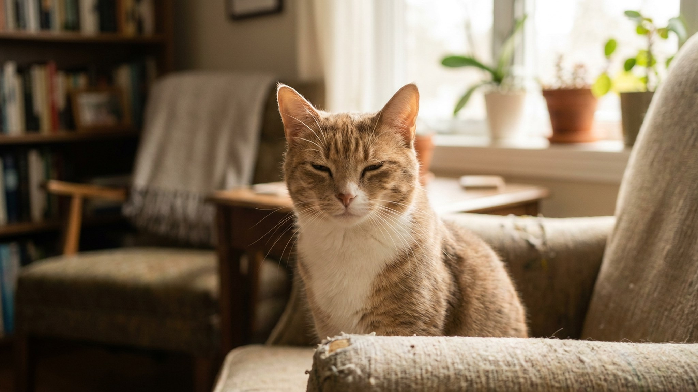

Медленное моргание кошки: язык доверия и 3 ошибки хозяина

9 июня 2026 · 6 минут чтения · Поведение · Общение · Кошки
Кошка сидит напротив и вдруг медленно-медленно смыкает веки — и открывает. Большинство людей не реагируют или смотрят в ответ прямым немигающим взглядом. Это ошибка: для кошки прямой взгляд без моргания — угроза, а не ответ. Этолог Сьюзан Сондерс в 2020 году впервые доказала в контролируемом эксперименте, что медленное моргание работает в обе стороны — и вот как его использовать правильно.
🐾 Экономьте на лишних визитах к врачу
Сначала спросите AI-ветеринара в AnimaLife — часто этого достаточно, чтобы понять, нужен ли визит к врачу.
Спросить бесплатно → Спросить в MAX →
Что такое медленное моргание и почему это «кошачий поцелуй»
Среди исследователей поведения кошек этот жест называют slow blink — медленное сжимание и разжимание век, иногда с небольшой паузой. Кошка при этом расслаблена: тело не напряжено, уши стоят вперёд или слегка в стороны, хвост не хлещет.
Термин «кошачий поцелуй» пришёл из среды фелинологов и популяризаторов этологии. Смысл его в следующем: кошка добровольно закрывает глаза перед существом, которое потенциально могло бы быть опасным. Это акт уязвимости — а значит, доверия. В природе животные не закрывают глаза перед угрозой. Если кошка морганёт медленно рядом с вами — она говорит: «Я тебе не угрожаю и не боюсь».
Важно понимать: это не просто «кошке скучно» или «сонная реакция». Скучающая кошка отворачивается или уходит. Сонная — ложится и закрывает глаза полностью. Медленное моргание при прямом контакте взглядами — именно коммуникативный сигнал.
Исследование Сьюзан Сондерс: что именно доказали учёные
В 2020 году Сьюзан Сондерс (Susanne Schötz) из Лундского университета совместно с Карен МакКомб из Университета Сассекса провела серию экспериментов с участием 21 кошки из разных домов. Цель — проверить, реагируют ли кошки на медленное моргание от незнакомого человека и влияет ли ответное моргание хозяина на поведение животного.
Ключевые результаты:
- Кошки значительно чаще отвечали медленным морганием незнакомцу, который первым подавал этот сигнал, по сравнению с нейтральным взглядом без моргания.
- После сигнала незнакомца кошки чаще приближались к нему и демонстрировали расслабленную позу.
- Эффект работал даже без предварительного знакомства — незнакомый человек со slow blink получал более позитивную реакцию, чем знакомый, который просто смотрел.
Исследование опубликовано в журнале Scientific Reports и считается первым строгим подтверждением того, что медленное моргание — двунаправленный коммуникативный сигнал, а не только проявление кошкиного настроения.
Как правильно подавать сигнал: пошаговая техника
Многие пробовали «смотреть и моргать» — и ничего не происходило. Дело обычно в деталях исполнения:
- Расстояние и поза. Сядьте или лягте на уровень кошки. Нависать над ней — доминирование, не общение. Оптимальное расстояние — 1–3 метра.
- Нейтральный взгляд сначала. Не смотрите пристально и не «буравьте» взглядом. Посмотрите на кошку мягко, чуть расфокусировав взгляд.
- Моргание. Медленно опустите веки — примерно за 2 секунды — и так же медленно поднимите. Можно оставить взгляд чуть прищуренным несколько секунд перед тем, как открыть полностью.
- Пауза. После моргания не смотрите пристально. Слегка отведите взгляд в сторону — это снизит напряжение и даст кошке возможность ответить без давления.
- Повторение. Если кошка не реагирует — подождите 10–15 секунд и повторите. Не делайте это непрерывно: кошки не любят навязчивости.
Когда кошка отвечает slow blink в ответ — это успех. Иногда она дополнительно потянется в вашу сторону, опустит хвост, мяукнет мягко или приблизится.
3 ошибки, которые разрушают сигнал
Именно здесь большинство хозяев теряют момент контакта:
- Ошибка 1: ответный прямой немигающий взгляд. Кошка моргнула — вы смотрите прямо и пристально в ответ. С точки зрения кошачьей этологии это читается как доминирование или угроза. Кошка напряжётся или отвернётся.
- Ошибка 2: движение к кошке сразу после сигнала. Вы моргнули, кошка ответила — и вы тут же потянулись погладить. Слишком быстро: кошка ещё не приняла решение подпустить вас. Подождите, пусть она сама сделает шаг.
- Ошибка 3: подача сигнала в неподходящий момент. Если кошка напряжена (шерсть дыбом, хвост хлещет, уши прижаты) — медленное моргание не сработает. Сначала нужно убрать источник стресса, дать животному успокоиться, и только потом начинать коммуникацию.
Медленное моргание с незнакомой кошкой: протокол знакомства
Slow blink особенно полезен при первом знакомстве — с чужой кошкой, с кошкой в приюте или с кошкой партнёра/друга, которая вас боится.
Работающий протокол:
- Войдите в комнату, не смотрите на кошку — дайте ей привыкнуть к вашему присутствию.
- Сядьте или лягте боком к ней — не лицом к лицу.
- Через 2–3 минуты мягко посмотрите в сторону кошки и дайте slow blink.
- Отведите взгляд, не ждите реакции демонстративно.
- Если кошка проявила интерес — вытяните руку ладонью вниз и дайте обнюхать. Не тянитесь сами.
В среднем 2–3 сессии такого подхода дают ощутимый результат даже с пугливыми животными.
Работает ли slow blink со всеми кошками
Исследование Сондерс проводилось на домашних кошках с разным характером. В целом эффект устойчив, но есть нюансы:
- Очень пугливые кошки (с плохой социализацией в котёнстве) реагируют медленнее. Им нужно больше времени и больше сессий.
- Кошки, прожившие в приюте долго, часто «выключают» коммуникацию с людьми как защитный механизм. Slow blink работает, но требует терпения — недели, а не дни.
- Кошки в стрессе (переезд, новый питомец, болезнь) временно теряют интерес к социальному контакту. Сначала — стабильность среды, потом — коммуникация.
- Игривые и общительные кошки реагируют быстро и ярко — иногда сами первыми посылают сигнал хозяину, который ещё даже не успел моргнуть.
Другие сигналы расслабленности: контекст slow blink
Медленное моргание редко существует в изоляции. Понимая контекст, вы лучше читаете кошку:
- Полуприкрытые веки в покое. Кошка просто расслаблена и не спит. Это фоновый сигнал комфорта, не адресный.
- Поворот головы с морганием. Кошка смотрит на вас, моргает и отворачивается — она вас «приняла» и больше не мониторит как потенциальную угрозу. Хороший знак.
- Зажмуривание при почёсывании. Кошке приятно, это не slow blink — просто рефлекс удовольствия.
- Прямой взгляд без моргания. Часто — внимание и интерес (например, к игрушке), но между кошками или к незнакомцу — напряжение или вызов. Не отвечайте тем же.
Как использовать slow blink для укрепления отношений каждый день
Это не разовый приём — а регулярная практика. Несколько рекомендаций для ежедневного использования:
- Когда кошка смотрит на вас из другого конца комнаты — ответьте slow blink. Это «я тебя вижу, всё хорошо».
- Перед тем как взять кошку на руки — сначала присядьте, установите контакт взглядом, моргните. Не хватайте сразу.
- После неприятной процедуры (стрижка когтей, чистка ушей) — не уходите сразу. Сядьте рядом, моргните медленно, дайте кошке «простить» и восстановить контакт.
- Если кошка сердита или в стрессе — slow blink может послужить сигналом «я не угрожаю», снизить напряжение без прикосновений.
🐾 Всё о вашем питомце — в одном приложении
AI-ветеринар, дневник, напоминания о прививках и уходе. Установите AnimaLife — это бесплатно, в Telegram и MAX.
Открыть в Telegram → Открыть в MAX →
🐾 Понравился разбор?
Подпишитесь на канал — каждый день разбираем по одному тревожному симптому у кошек и собак: что в пределах нормы, а когда пора к врачу. Подпишитесь, чтобы не пропустить разбор, который может спасти здоровье вашего питомца.
← Все статьи · Открыть AnimaLife в Telegram · RSS